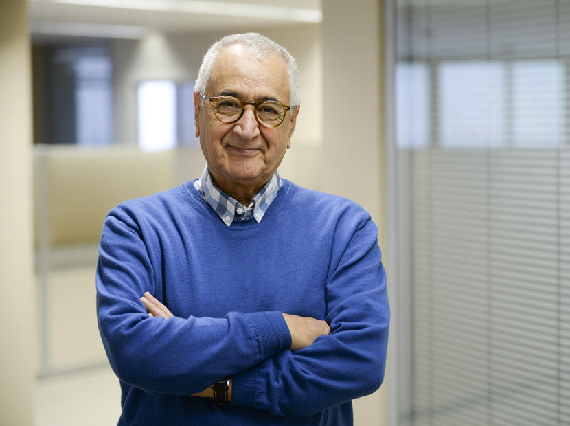

İletişim Psikolojisi Uzmanı ve Yazar

Doğan Cüceloğlu, 1938 yılında Mersin'in Silifke ilçesinde doğdu. On bir çocuklu bir ailenin on birinci çocuğudur. İstanbul Üniversitesi Psikoloji Bölümü'nden mezun olduktan sonra ABD'de Illinois Üniversitesi'nde doktorasını tamamladı.
Türkiye'ye döndüğünde Hacettepe ve Boğaziçi üniversitelerinde çalıştı. Fulbright bursuyla tekrar ABD'ye giderek Kaliforniya'da uzun yıllar öğretim üyeliği yaptı.
Kariyeri ve Katkıları: Türk insanının düşünce, duygu ve davranışlarını bilimsel psikoloji kavramları ile inceledi. Yazdığı kitaplarla "İnsan İnsana" iletişim kavramını topluma kazandırdı. 2021 yılında İstanbul'da hayatını kaybetti ama eserleriyle yaşamaya devam ediyor.